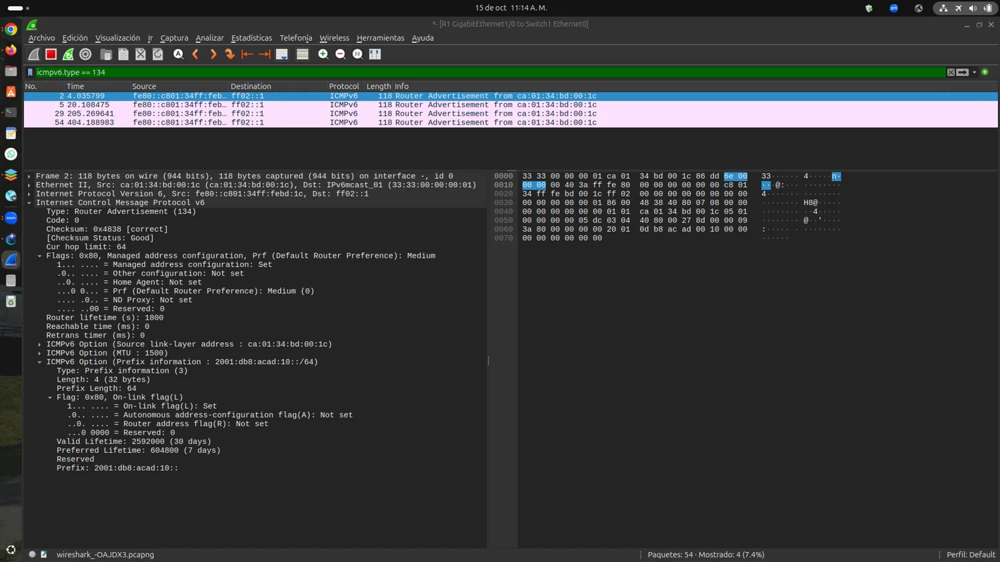
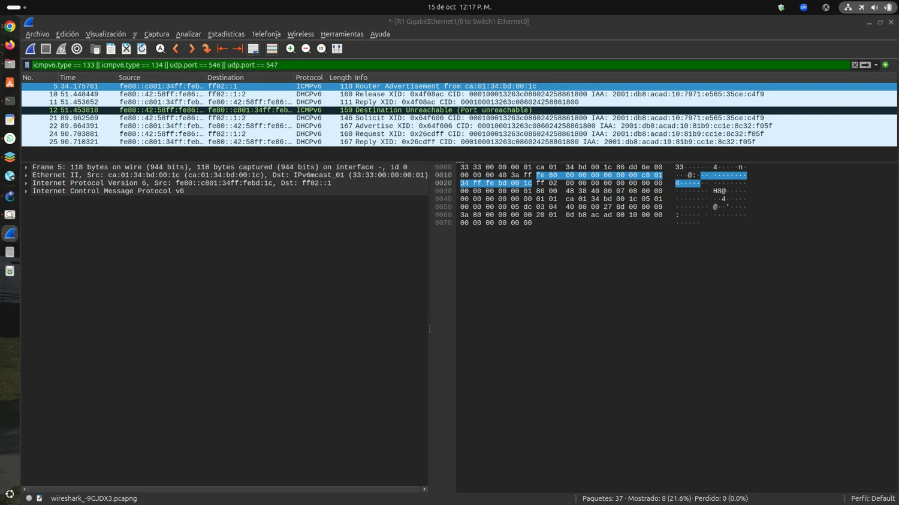
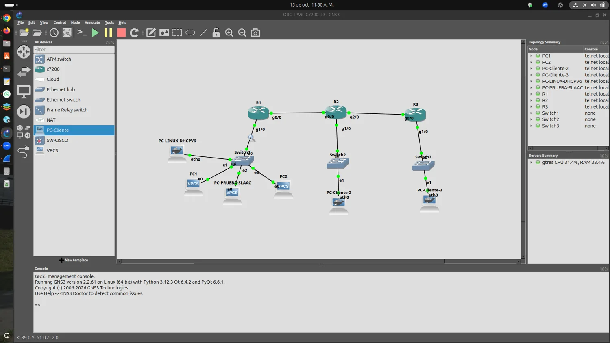
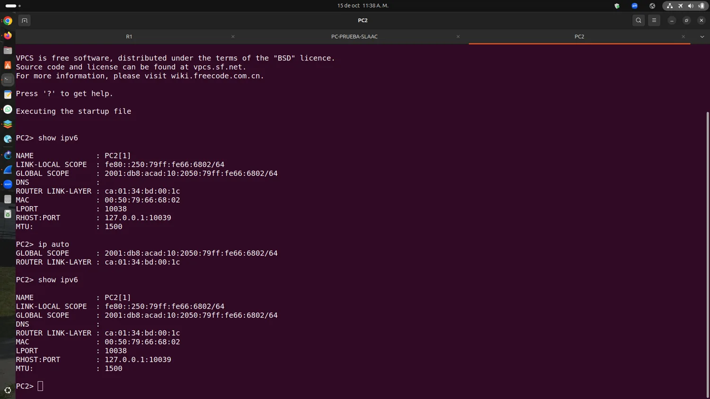
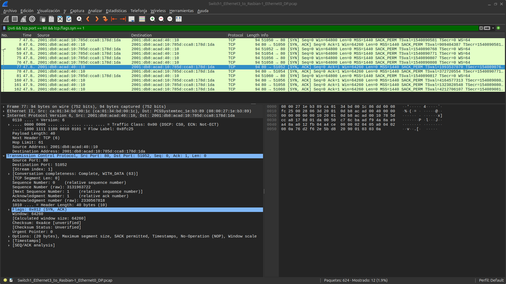
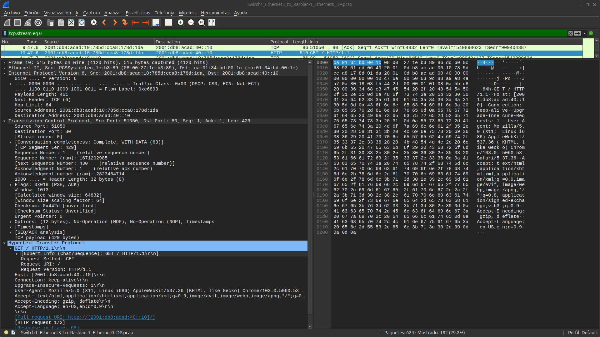
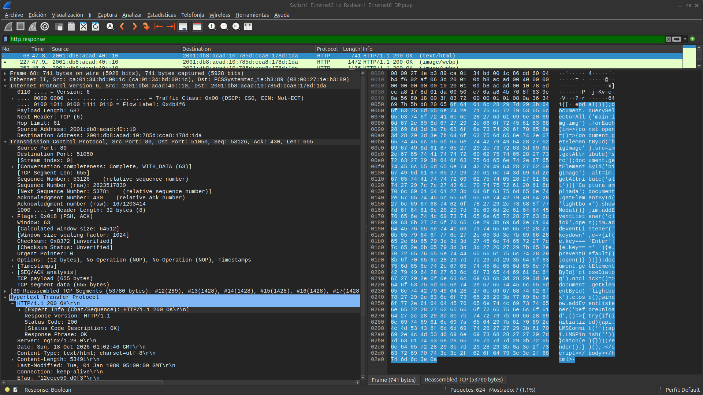
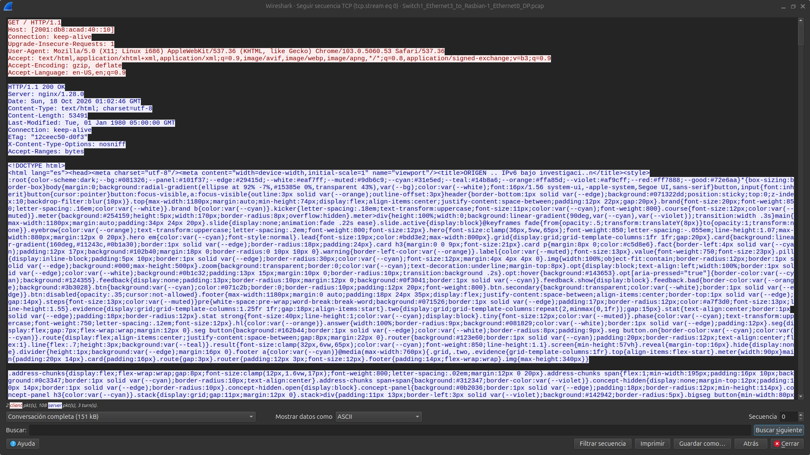

IPv6 bajo investigación.
Antes de investigar un cliente que tiene conectividad IPv6 sin un arrendamiento DHCPv6, aprenderá los conceptos necesarios para interpretar el caso. Después pondrá a prueba sus hipótesis con evidencia real.
Su misión
Primero explore los fundamentos con ejercicios formativos sin nota. Luego actúe como analista: interprete capturas auténticas, distinga hechos de hipótesis y resuelva desafíos evaluados con retroalimentación inmediata.
17 escenas9 fundamentos interactivos6 desafíos evaluados35–45 minutosResultados de aprendizaje
Interpretar RA y sus indicadores M, A y L; identificar los mensajes DHCPv6; explicar diferencias entre SLAAC, NDP, DHCPv6 y OSPFv3; sustentar conclusiones con evidencia.
IPv6: prefijo + identificador.
Una dirección IPv6 contiene 128 bits. En una LAN habitual el prefijo /64 identifica la red; la otra mitad puede identificar la interfaz, pero el mecanismo exacto depende de la configuración.
Explore una dirección del laboratorio
Prefijo LAN10: 2001:db8:acad:10::/64. El bloque 2001:db8::/32 está reservado para documentación, no para Internet de producción.
2001:0db8:acad:0010:0000:0000:0000:0001 → 2001:db8:acad:10::1. Pueden omitirse ceros iniciales de cada bloque y sustituirse una sola secuencia continua de bloques cero por ::.
¿Qué significan /64 y /128?
El /64 normalmente representa el prefijo de una LAN. Una dirección /128 identifica una dirección individual; Linux puede mostrar así una dirección recibida mediante DHCPv6 IA_NA sin perder la ruta /64 aprendida por RA.
¿Una dirección IPv6 global demuestra que hubo un servidor DHCPv6?
¿Quién puede hablar con quién?
Seleccione un tipo para explorarlo
Se usa en el enlace local para descubrir vecinos y routers; no se enruta entre sedes. Un gateway IPv6 frecuentemente aparece como fe80::....
Un host necesita más que una dirección
El router R1 anuncia el prefijo LAN10 y una ruta predeterminada mediante RA. OSPFv3 intercambia rutas entre routers, no configura las direcciones de los clientes.
El router habla primero.
NDP (Neighbor Discovery Protocol) utiliza ICMPv6 para descubrir routers, vecinos, prefijos y verificar direcciones. El Router Advertisement (RA, tipo 134) anuncia información que los hosts usan para configurar el enlace y elegir router.
Explore el intercambio
← RA 134
Router Solicitation (RS): el host solicita que un router envíe un RA, evitando esperar al próximo anuncio periódico.
RA ≠ DHCPv6
RA puede proporcionar el router predeterminado, información on-link y prefijos con indicadores para autoconfiguración. No concede por sí mismo una dirección DHCPv6 Stateful.
DHCPv6 utiliza UDP 546 (cliente) y 547 (servidor). Los RA utilizan ICMPv6.
¿Qué mensaje informa normalmente al cliente de su router predeterminado?
M, A y L: tres decisiones distintas.
Seleccione cada indicador para interpretar su significado. M se anuncia en el encabezado RA; A y L pertenecen a la opción Prefix Information de cada prefijo.
M = Managed
M=1: el router señala que la obtención de direcciones debe realizarse por DHCPv6 Stateful. No prueba que un servidor haya entregado una dirección.
Observe la evidencia original

La captura se puede ampliar para localizar cada bandera dentro del paquete.
Si A=0 en el prefijo LAN10, ¿qué corresponde esperar de un host SLAAC conforme?
SLAAC, Stateless y Stateful.
No son sinónimos. El host puede autogenerar una dirección o solicitarla a un servidor. Explore las tres modalidades antes de resolver el caso.
SLAAC · Dirección creada por el host
El host usa el prefijo recibido mediante RA con A=1 y genera un identificador de interfaz (no siempre EUI-64: sistemas modernos pueden usar direcciones estables opacas o temporales). El router no mantiene por ello un arrendamiento DHCPv6.
VPCS> ip auto
¿Qué observaría en Cisco?
show ipv6 dhcp binding lista concesiones DHCPv6 Stateful del servidor, pero no representa un inventario de todos los hosts que utilizan IPv6.
¿Qué observaría en Wireshark?
En SLAAC destacan RS/RA y NDP. En Stateful debe verse intercambio DHCPv6 —por ejemplo Solicit, Advertise, Request y Reply— además de RA para conocer el router predeterminado.
Cuatro mensajes. Una concesión.
Pulse los pasos para entender la función de cada mensaje. La secuencia de cuatro pasos es la que observamos en el laboratorio; DHCPv6 admite variantes como Rapid Commit.
Solicit · Cliente → servidores
Linux busca servidores DHCPv6. Puede solicitar una dirección en una asociación IA_NA, identificándose mediante un DUID.

Diccionario mínimo
¿Qué mensaje confirma finalmente la asignación en la secuencia tradicional?
¿Cómo encuentra un router otra red?
Un host descubre su puerta de enlace mediante Router Advertisement. A partir de ese punto, los routers deben conocer la ruta hasta las redes remotas. Esta tarea puede resolverse con rutas estáticas o con protocolos de enrutamiento dinámico.
Rutas estáticas y dinámicas
Explore la decisión del router
Seleccione el destino de un paquete que R1 recibe desde Linux en LAN10.
Destino en LAN10
El prefijo 2001:db8:acad:10::/64 está directamente conectado a R1. No necesita OSPFv3 para llegar a hosts de su propia LAN.
Si R3 anuncia su LAN40 mediante OSPFv3, ¿qué información aprende R1?
De RIPv2 a OSPFv3.
En el curso se utiliza RIPv2 para aprender el intercambio de rutas IPv4 y OSPFv3 para comprobar comunicación entre sedes IPv6. No son protocolos intercambiables en la misma familia de direcciones.
Compare los protocolos
RIPv2 · Vector distancia · IPv4
Aprende rutas usando como métrica el número de saltos. Máximo de 15 saltos útiles; 16 significa inalcanzable. Es apropiado para introducir enrutamiento dinámico IPv4, pero no transporta rutas IPv6.
¿Qué utilizamos en nuestro laboratorio?
show ipv6 route ospf.R2# show ipv6 ospf neighbor R2# show ipv6 route ospf
¿Cuál de estos protocolos se utiliza para anunciar LAN40 como ruta IPv6 en nuestro escenario?
¿Dónde está LAN40?
LAN40 es la red de la sede conectada a R3, a la derecha de la topología. Su prefijo es 2001:DB8:ACAD:40::/64 y su puerta de enlace es 2001:DB8:ACAD:40::1. Desde Linux en LAN10, el paquete debe pasar por R1 y R2 hasta R3.
Mapa interactivo del viaje: Linux (LAN10) → R3 (LAN40)
2001:db8:acad:100::/64
2001:db8:acad:200::/64
Seleccione un nodo del recorrido
Pulse Linux, R1, R2, R3 o el destino para observar qué información utiliza en cada etapa.
Dos tecnologías, dos responsabilidades
fe80::…).
Desafío formativo: explique el recorrido
El host de LAN10 envía un ping hacia 2001:db8:acad:40::1. ¿Cuál es el orden lógico?
Linux$ ip -6 route R1# show ipv6 route ospf R2# show ipv6 ospf neighbor Linux$ traceroute -6 2001:db8:acad:40::1
La dirección ::1 de LAN40 identifica al router R3; un cliente de esa sede tendría otra dirección dentro del mismo /64.
Tres routers. Tres sedes IPv6.
LAN10
LAN20
LAN40 · 2001:db8:acad:40::/64

Dato inesperado
VPCS obtuvo 2001:db8:acad:10:2050:79ff:fe66:6800/64 mediante ip auto; R1 no mostró arrendamiento DHCPv6. Aun así, el cliente logró llegar a LAN20 y LAN40.
Desafío 1 · Elija una conclusión
El mensaje no miente.
Wireshark registra un Router Advertisement real de Cisco R1 para 2001:db8:acad:10::/64.
Desafío 2 · Interpretación de banderas
¿Cuál es el significado correcto de A=0 en el prefijo anunciado?
Misma LAN. Resultados distintos.
VPCS

Genera una dirección con identificador compatible con EUI-64 modificado. Las pruebas indican una aparente discrepancia frente a A=0; las capturas por sí solas no prueban la causa exacta.
No hay binding DHCPv6Linux Docker · E01
ANTES DE DHCPv6 eth0 fe80::42:58ff:fe86:1800/64 2001:db8:acad:10::/64 dev eth0 default via fe80::c801:34ff:febd:1c proto ra
Observación real: Linux tenía dirección link-local y ya conocía una ruta por RA, antes de ejecutar dhclient -6.
Desafío 3 · ¿Qué falta?
Antes de pedir DHCPv6, Linux conoce la ruta predeterminada. ¿De dónde proviene?
La negociación en cuatro pasos.
Paquetes 21, 22, 24 y 25. La captura incluye también tráfico de un intento anterior.
Laboratorio de identificación
¿Qué secuencia confirma una concesión DHCPv6 Stateful tradicional?
De la evidencia a la consola.
Misión práctica en GNS3
Conserve M=1, A=0 en R1 y conecte un cliente Linux nuevo en SW10. Registre las salidas antes y después de solicitar DHCPv6.
ip -6 addr show dev eth0 ip -6 route dhclient -6 -v -1 eth0 ip -6 addr show dev eth0
En R1:
show ipv6 dhcp binding show ipv6 dhcp interface
Desafío 4 · Correlacionar evidencias
Linux obtiene una dirección /128 scope global dynamic y mantiene la ruta default via fe80::... proto ra. ¿Cuál interpretación es correcta?
Trabajo opcional: guarde su propio archivo .pcapng, capture el arrendamiento Cisco y contraste con VPCS.
La anomalía VPCS.
Hechos verificados
R1 anuncia M=1, A=0. Las instancias VPCS muestran direcciones globales con identificadores compatibles con EUI-64, aun cuando el arrendamiento DHCPv6 de R1 aparece vacío para ellas.
Elija la hipótesis mejor sustentada
¿Cuál enunciado evita sacar conclusiones que las capturas todavía no demuestran?
Prueba sugerida
Inicie la captura antes de encender un VPCS sin configuración persistida; observe los mensajes RS/RA y la dirección del cliente desde su primer instante operativo.
El veredicto es la evidencia.
Su desempeño
Resuelva los desafíos para obtener su resultado.
En Moodle, el paquete SCORM comunica puntaje y finalización si la actividad se abre a través del LMS.
Aplicación práctica
Explique en un informe corto (máx. 250 palabras) por qué una dirección IPv6 global no demuestra una concesión DHCPv6. Sustente su respuesta con un RA, un paquete DHCPv6 y un comando del cliente.
Conclusiones técnicas
RA proporciona información de prefijo y router; DHCPv6 Stateful asigna direcciones con arrendamientos; OSPFv3 anuncia rutas entre routers; NDP gestiona vecindad en el enlace.
Fuentes para profundizar
Internet Society · ISOC Argentina (2009): IPv6 para Todos: Guía de uso y aplicación para diversos entornos, caps. 2–4 y 6. Su explicación de NDP/RA, autoconfiguración y verificación de conectividad sirve de base histórica; los comandos antiguos no deben copiarse sin validar la versión del equipo.
LACNIC: Despliega IPv6 y IPv6 Básico. Su enfoque de direccionamiento, autoconfiguración y despliegue práctico inspira la progresión didáctica.
La comparación RIPv2/OSPFv2/OSPFv3/RIPng es elaboración didáctica complementaria; no se atribuye al libro de 2009. Prefijos 2001:db8::/32: exclusivamente documentación y laboratorio.
Del paquete a la página web.
Una petición web desde LAN10 a LAN40 demuestra cómo IPv6, TCP y HTTP colaboran en el mismo intercambio. Explore las capturas reales realizadas sobre el enlace Raspbian-1 ↔ Switch1 de GNS3.
2001:db8:acad:10:785d:cca8:178d:1da · Destino: Nginx 2001:db8:acad:40::10 · Servicio: HTTP, TCP/80. El cliente usa un puerto efímero: 51050 en el flujo de ejemplo.Esta actividad complementaria no modifica la puntuación de los seis desafíos evaluados. Puede completarse con las imágenes, sin instalar GNS3 ni VirtualBox.
E07 · Establecimiento TCP
Observe SYN, SYN-ACK y ACK. La captura muestra varias conexiones; siga un mismo puerto de origen para reconstruir una sola conversación.

E08 · Solicitud HTTP
En el paquete 10 del flujo 0 se observa GET / HTTP/1.1, encabezado Host con IPv6 entre corchetes y destino TCP/80.

E09 · Respuesta HTTP
La respuesta HTTP/1.1 200 OK procede de 2001:db8:acad:40::10 hacia el cliente en LAN10. Observe inversión de origen y destino.

E10 · Conversación completa
Follow TCP Stream reconstruye los mensajes HTTP: GET /, encabezados de la respuesta 200 OK y contenido HTML.

Reto de interpretación con evidencias
Identifique primero el establecimiento TCP, después la petición y, finalmente, la respuesta. Para las preguntas, utilice las capturas ampliadas.
Desafío complementario 1
¿Qué paquete inicia el establecimiento de la conexión TCP?
Desafío complementario 2
¿Qué demuestra la solicitud GET / registrada en el paquete 10?
Desafío complementario 3
¿Qué conclusión permite la respuesta HTTP/1.1 200 OK?
Para investigar en Wireshark: ipv6 && tcp.port == 80, http.request, http.response, y tcp.stream eq 0.
Explore la evidencia desde cualquier equipo
Descargue el archivo de captura original (formato PCAP) y ábralo en Wireshark, o analice las cuatro imágenes directamente desde esta escena.
↓ Descargar captura HTTP_IPv6_LAN10_LAN40.pcap
Conclusión: ICMPv6 comprueba alcance IP; TCP comprueba el establecimiento de transporte; HTTP 200 OK demuestra que el servidor atendió la solicitud de aplicación. El diagnóstico debe integrar las tres evidencias.